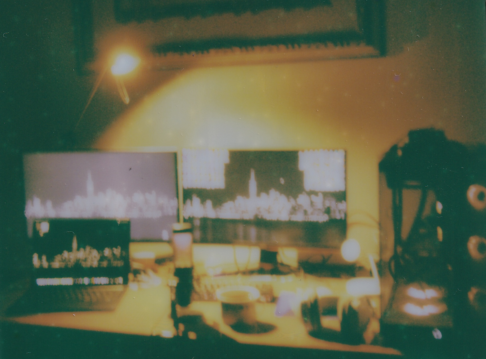
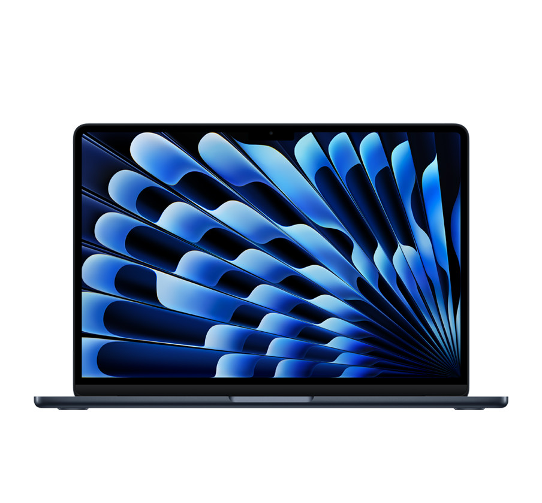
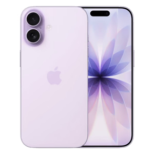
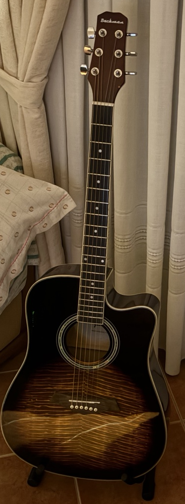

HD 280 Pro or better
Sennheiser · headphones
For listening closely to the little details.
A PAGE FROM MY ROOM / 2026
Little things I make things with.
a little noise, a little daydreaming.01 / THE LITTLE CORNER
A place for open tabs
and unfinished ideas.

02 / EVERYDAY THINGS
A notebook for ideas, a camera for little moments. The things that come along for the ride.



03 / SOMETHING UNPLUGGED
Beckman Dreadnought
Tigerburst
A few chords, another take, and somewhere to start. This little corner has room for the unfinished songs too.
04 / A STUDIO, SOMEDAY
Future upgrades — planned, not part of my current setup. A little wish list for recording, listening, and finding my own sound.
Sennheiser · headphones
For listening closely to the little details.
Focusrite · audio interface
A way to bring instruments and microphones into the recording.
Audio-Technica · microphone
A place to begin with vocals and acoustic takes.
Novation · MIDI keyboard
Small keys for sketches, melodies and happy accidents.
room to grow. no rush. ♡